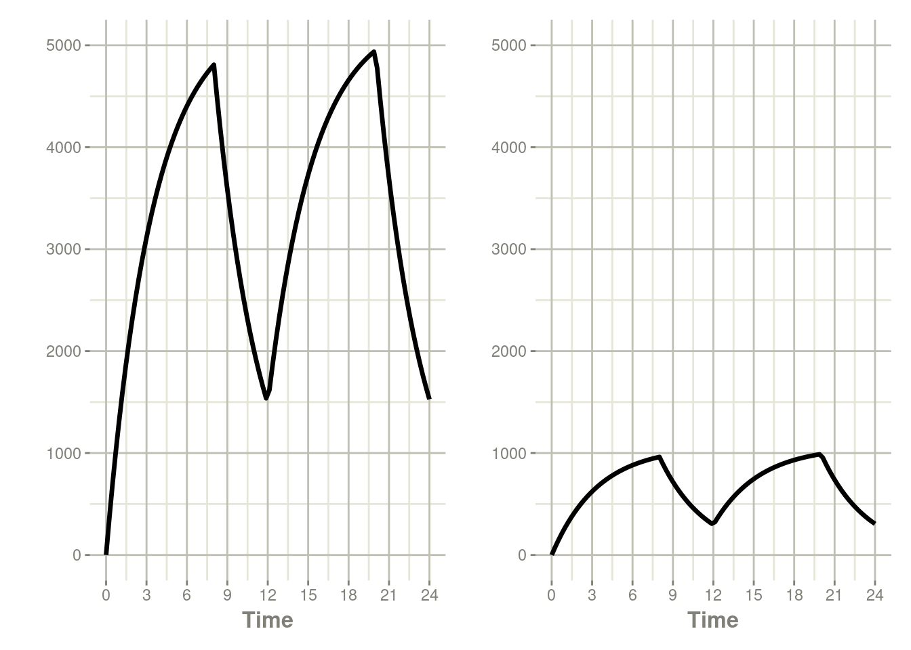
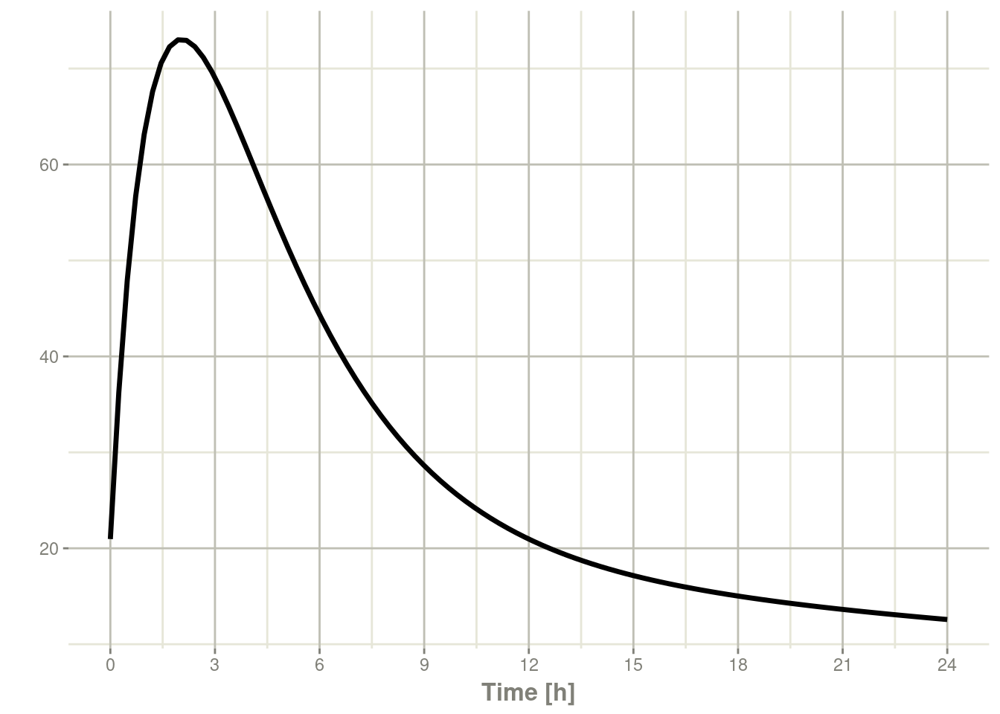

Chapter 7 RxODE events
7.1 RxODE event tables
In general, RxODE event tables follow NONMEM dataset convention with the exceptions:
- The compartment data item (
cmt) can be a string/factor with compartment names- You may turn off a compartment with a negative compartment number or “-cmt” where cmt is the compartment name.
- The compartment data item (
cmt) can still be a number, the number of the compartment is defined by the appearance of the compartment name in the model. This can be tedious to count, so you can specify compartment numbers easier by using thecmt(cmtName)at the beginning of the model.
- An additional column,
durcan specify the duration of infusions;- Bioavailability changes will change the rate of infusion since
dur/amtare fixed in the input data. - Similarly, when specifying
rate/amtfor an infusion, the bioavailability will change the infusion duration sincerate/amtare fixed in the input data.
- Bioavailability changes will change the rate of infusion since
- Some infrequent NONMEM columns are not supported:
pcmt,call. - Additional events are supported:
evid=5or replace event; This replaces the value of a compartment with the value specified in theamtcolumn. This is equivalent todeSolve=replace.evid=6or multiply event; This multiplies the value in the compartment with the value specified by theamtcolumn. This is equivalent todeSolve=multiply.
Here are the legal entries to a data table:
| Data Item | Meaning | Notes |
|---|---|---|
| id | Individual identifier | Can be a integer, factor, character, or numeric |
| time | Individual time | Numeric for each time. |
| amt | dose amount | Positive for doses zero/NA for observations |
| rate | infusion rate | When specified the infusion duration will be dur=amt/rate |
| rate = -1, rate modeled; rate = -2, duration modeled | ||
| dur | infusion duration | When specified the infusion rate will be rate = amt/dur |
| evid | event ID | 0=Observation; 1=Dose; 2=Other; 3=Reset; 4=Reset+Dose; 5=Replace; 6=Multiply |
| cmt | Compartment | Represents compartment #/name for dose/observation |
| ss | Steady State Flag | 0 = non-steady-state; 1=steady state; 2=steady state +prior states |
| ii | Inter-dose Interval | Time between doses. |
| addl | # of additional doses | Number of doses like the current dose. |
Other notes:
- The
evidcan be the classic RxODE (described here) or theNONMEM-styleeviddescribed above. NONMEM’sDVis not required;RxODEis a ODE solving framework.NONMEM’sMDVis not required, since it is captured inEVID.- Instead of
NONMEM-compatible data, it can acceptdeSolvecompatible data-frames.
When returning the RxODE solved data-set there are a few additional
event ids (EVID) that you may see depending on the solving options:
EVID = -1is when a modeled rate ends (corresponds torate = -1)EVID = -2is when a modeled duration ends (corresponds torate=-2)EVID = -10when a rate specified zero-order infusion ends (corresponds torate > 0)EVID = -20when a duration specified zero-order infusion ends (corresponds todur > 0)EVID = 101, 102, 103,...These correspond to the1,2,3, … modeled time (mtime).
These can only be accessed when solving with the option combination
addDosing=TRUE and subsetNonmem=FALSE. If you want to see the
classic EVID equivalents you can use addDosing=NA.
To illustrate the event types we will use the model from the original RxODE tutorial.
library(RxODE)
### Model from RxODE tutorial
m1 <-RxODE({
KA=2.94E-01;
CL=1.86E+01;
V2=4.02E+01;
Q=1.05E+01;
V3=2.97E+02;
Kin=1;
Kout=1;
EC50=200;
## Added modeled bioavaiblity, duration and rate
fdepot = 1;
durDepot = 8;
rateDepot = 1250;
C2 = centr/V2;
C3 = peri/V3;
d/dt(depot) =-KA*depot;
f(depot) = fdepot
dur(depot) = durDepot
rate(depot) = rateDepot
d/dt(centr) = KA*depot - CL*C2 - Q*C2 + Q*C3;
d/dt(peri) = Q*C2 - Q*C3;
d/dt(eff) = Kin - Kout*(1-C2/(EC50+C2))*eff;
eff(0) = 1
});7.2 Bolus/Additive Doses
A bolus dose is the default type of dose in RxODE and only requires
the amt/dose. Note that this uses the convenience function et()
described in the RxODE event tables
ev <- et(timeUnits="hr") %>%
et(amt=10000, ii=12,until=24) %>%
et(seq(0, 24, length.out=100))
ev#> ──────────────── EventTable with 101 records ───────────────
#>
#> 1 dosing records (see x$get.dosing(); add with add.dosing or et)
#> 100 observation times (see x$get.sampling(); add with add.sampling or et)
#> multiple doses in `addl` columns, expand with x$expand(); or etExpand(x)
#> ── First part of x: ────────────────────────────────────────
#> # A tibble: 101 x 5
#> time amt ii addl evid
#> [h] <dbl> [h] <int> <evid>
#> 1 0.0000000 NA NA NA 0:Observation
#> 2 0.0000000 10000 12 2 1:Dose (Add)
#> 3 0.2424242 NA NA NA 0:Observation
#> 4 0.4848485 NA NA NA 0:Observation
#> 5 0.7272727 NA NA NA 0:Observation
#> 6 0.9696970 NA NA NA 0:Observation
#> 7 1.2121212 NA NA NA 0:Observation
#> 8 1.4545455 NA NA NA 0:Observation
#> 9 1.6969697 NA NA NA 0:Observation
#> 10 1.9393939 NA NA NA 0:Observation
#> # … with 91 more rowsrxSolve(m1, ev) %>% plot(C2) +
xlab("Time")
7.3 Infusion Doses
There are a few different type of infusions that RxODE supports:
- Constant Rate Infusion (
rate) - Constant Duration Infusion (
dur) - Estimated Rate of Infusion
- Estimated Duration of Infusion
7.3.1 Constant Infusion (in terms of duration and rate)
The next type of event is an infusion; There are two ways to specify
an infusion; The first is the dur keyword.
An example of this is:
ev <- et(timeUnits="hr") %>%
et(amt=10000, ii=12,until=24, dur=8) %>%
et(seq(0, 24, length.out=100))
ev#> ──────────────── EventTable with 101 records ───────────────
#>
#> 1 dosing records (see x$get.dosing(); add with add.dosing or et)
#> 100 observation times (see x$get.sampling(); add with add.sampling or et)
#> multiple doses in `addl` columns, expand with x$expand(); or etExpand(x)
#> ── First part of x: ────────────────────────────────────────
#> # A tibble: 101 x 6
#> time amt ii addl evid dur
#> [h] <dbl> [h] <int> <evid> [h]
#> 1 0.0000000 NA NA NA 0:Observation NA
#> 2 0.0000000 10000 12 2 1:Dose (Add) 8
#> 3 0.2424242 NA NA NA 0:Observation NA
#> 4 0.4848485 NA NA NA 0:Observation NA
#> 5 0.7272727 NA NA NA 0:Observation NA
#> 6 0.9696970 NA NA NA 0:Observation NA
#> 7 1.2121212 NA NA NA 0:Observation NA
#> 8 1.4545455 NA NA NA 0:Observation NA
#> 9 1.6969697 NA NA NA 0:Observation NA
#> 10 1.9393939 NA NA NA 0:Observation NA
#> # … with 91 more rowsrxSolve(m1, ev) %>% plot(depot, C2) +
xlab("Time")
It can be also specified by the rate component:
ev <- et(timeUnits="hr") %>%
et(amt=10000, ii=12,until=24, rate=10000/8) %>%
et(seq(0, 24, length.out=100))
ev#> ──────────────── EventTable with 101 records ───────────────
#>
#> 1 dosing records (see x$get.dosing(); add with add.dosing or et)
#> 100 observation times (see x$get.sampling(); add with add.sampling or et)
#> multiple doses in `addl` columns, expand with x$expand(); or etExpand(x)
#> ── First part of x: ────────────────────────────────────────
#> # A tibble: 101 x 6
#> time amt rate ii addl evid
#> [h] <dbl> <rate/dur> [h] <int> <evid>
#> 1 0.0000000 NA NA NA NA 0:Observation
#> 2 0.0000000 10000 1250 12 2 1:Dose (Add)
#> 3 0.2424242 NA NA NA NA 0:Observation
#> 4 0.4848485 NA NA NA NA 0:Observation
#> 5 0.7272727 NA NA NA NA 0:Observation
#> 6 0.9696970 NA NA NA NA 0:Observation
#> 7 1.2121212 NA NA NA NA 0:Observation
#> 8 1.4545455 NA NA NA NA 0:Observation
#> 9 1.6969697 NA NA NA NA 0:Observation
#> 10 1.9393939 NA NA NA NA 0:Observation
#> # … with 91 more rowsrxSolve(m1, ev) %>% plot(depot, C2) +
xlab("Time")
These are the same with the exception of how bioavailability changes the infusion.
In the case of modeling rate, a bioavailability decrease,
decreases the infusion duration, as in NONMEM. For example:
rxSolve(m1, ev, c(fdepot=0.25)) %>% plot(depot, C2) +
xlab("Time")
Similarly increasing the bioavailability increases the infusion duration.
rxSolve(m1, ev, c(fdepot=1.25)) %>% plot(depot, C2) +
xlab("Time")
The rationale for this behavior is that the rate and amt are
specified by the event table, so the only thing that can change with a
bioavailability increase is the duration of the infusion.
If you specify the amt and dur components in the event table,
bioavailability changes affect the rate of infusion.
ev <- et(timeUnits="hr") %>%
et(amt=10000, ii=12,until=24, dur=8) %>%
et(seq(0, 24, length.out=100))You can see the side-by-side comparison of bioavailability changes
affecting rate instead of duration with these records in the
following plots:
library(ggplot2)
library(patchwork)
p1 <- rxSolve(m1, ev, c(fdepot=1.25)) %>% plot(depot) +
xlab("Time") + ylim(0,5000)
p2 <- rxSolve(m1, ev, c(fdepot=0.25)) %>% plot(depot) +
xlab("Time")+ ylim(0,5000)
### Use patchwork syntax to combine plots
p1 * p2
7.3.2 Modeled Rate and Duration of Infusion
You can model the duration, which is equivalent to NONMEM’s
rate=-2. As a mnemonic you can use the dur=model instead of
rate=-2
ev <- et(timeUnits="hr") %>%
et(amt=10000, ii=12,until=24, dur=model) %>%
et(seq(0, 24, length.out=100))
ev#> ──────────────── EventTable with 101 records ───────────────
#>
#> 1 dosing records (see x$get.dosing(); add with add.dosing or et)
#> 100 observation times (see x$get.sampling(); add with add.sampling or et)
#> multiple doses in `addl` columns, expand with x$expand(); or etExpand(x)
#> ── First part of x: ────────────────────────────────────────
#> # A tibble: 101 x 6
#> time amt rate ii addl evid
#> [h] <dbl> <rate/dur> [h] <int> <evid>
#> 1 0.0000000 NA NA NA NA 0:Observation
#> 2 0.0000000 10000 -2:dur 12 2 1:Dose (Add)
#> 3 0.2424242 NA NA NA NA 0:Observation
#> 4 0.4848485 NA NA NA NA 0:Observation
#> 5 0.7272727 NA NA NA NA 0:Observation
#> 6 0.9696970 NA NA NA NA 0:Observation
#> 7 1.2121212 NA NA NA NA 0:Observation
#> 8 1.4545455 NA NA NA NA 0:Observation
#> 9 1.6969697 NA NA NA NA 0:Observation
#> 10 1.9393939 NA NA NA NA 0:Observation
#> # … with 91 more rowsrxSolve(m1, ev, c(durDepot=7)) %>% plot(depot, C2) +
xlab("Time")
Similarly, you may also model rate. This is equivalent to NONMEM’s
rate=-1 and is how RxODE’s event table specifies the data item as
well. You can also use rate=model as a mnemonic:
ev <- et(timeUnits="hr") %>%
et(amt=10000, ii=12,until=24, rate=model) %>%
et(seq(0, 24, length.out=100))
ev#> ──────────────── EventTable with 101 records ───────────────
#>
#> 1 dosing records (see x$get.dosing(); add with add.dosing or et)
#> 100 observation times (see x$get.sampling(); add with add.sampling or et)
#> multiple doses in `addl` columns, expand with x$expand(); or etExpand(x)
#> ── First part of x: ────────────────────────────────────────
#> # A tibble: 101 x 6
#> time amt rate ii addl evid
#> [h] <dbl> <rate/dur> [h] <int> <evid>
#> 1 0.0000000 NA NA NA NA 0:Observation
#> 2 0.0000000 10000 -1:rate 12 2 1:Dose (Add)
#> 3 0.2424242 NA NA NA NA 0:Observation
#> 4 0.4848485 NA NA NA NA 0:Observation
#> 5 0.7272727 NA NA NA NA 0:Observation
#> 6 0.9696970 NA NA NA NA 0:Observation
#> 7 1.2121212 NA NA NA NA 0:Observation
#> 8 1.4545455 NA NA NA NA 0:Observation
#> 9 1.6969697 NA NA NA NA 0:Observation
#> 10 1.9393939 NA NA NA NA 0:Observation
#> # … with 91 more rowsrxSolve(m1, ev, c(rateDepot=10000/3)) %>% plot(depot, C2) +
xlab("Time")
7.4 Steady State
These doses are solved until a steady state is reached with a constant inter-dose interval.
ev <- et(timeUnits="hr") %>%
et(amt=10000, ii=12, ss=1) %>%
et(seq(0, 24, length.out=100))
ev#> ──────────────── EventTable with 101 records ───────────────
#>
#> 1 dosing records (see x$get.dosing(); add with add.dosing or et)
#> 100 observation times (see x$get.sampling(); add with add.sampling or et)
#> ── First part of x: ────────────────────────────────────────
#> # A tibble: 101 x 5
#> time amt ii evid ss
#> [h] <dbl> [h] <evid> <int>
#> 1 0.0000000 NA NA 0:Observation NA
#> 2 0.0000000 10000 12 1:Dose (Add) 1
#> 3 0.2424242 NA NA 0:Observation NA
#> 4 0.4848485 NA NA 0:Observation NA
#> 5 0.7272727 NA NA 0:Observation NA
#> 6 0.9696970 NA NA 0:Observation NA
#> 7 1.2121212 NA NA 0:Observation NA
#> 8 1.4545455 NA NA 0:Observation NA
#> 9 1.6969697 NA NA 0:Observation NA
#> 10 1.9393939 NA NA 0:Observation NA
#> # … with 91 more rowsrxSolve(m1, ev) %>% plot(C2)
7.4.1 Steady state for complex dosing
By using the ss=2 flag, you can use the super-positioning principle
in linear kinetics to get steady state nonstandard dosing
(i.e. morning 100 mg vs evening 150 mg). This is done by:
- Saving all the state values
- Resetting all the states and solving the system to steady state
- Adding back all the prior state values
ev <- et(timeUnits="hr") %>%
et(amt=10000, ii=24, ss=1) %>%
et(time=12, amt=15000, ii=24, ss=2) %>%
et(time=24, amt=10000, ii=24, addl=3) %>%
et(time=36, amt=15000, ii=24, addl=3) %>%
et(seq(0, 64, length.out=500))
library(ggplot2)
rxSolve(m1, ev,maxsteps=10000) %>% plot(C2) +
annotate("rect", xmin=0, xmax=24, ymin=-Inf, ymax=Inf,
alpha=0.2) +
annotate("text", x=12.5, y=7,
label="Initial Steady State Period") +
annotate("text", x=44, y=7,
label="Steady State AM/PM dosing")
You can see that it takes a full dose cycle to reach the true complex steady state dosing.
7.4.2 Steady state for constant infusion or zero order processes
The last type of steady state that RxODE supports is steady-state constant infusion rate. This can be specified the same way as NONMEM, that is:
- No inter-dose interval
ii=0 - A steady state dose, ie
ss=1 - Either a positive rate (
rate>0) or a estimated raterate=-1. - A zero dose, ie
amt=0 - Once the steady-state constant infusion is achieved, the infusion is turned off when using this record, just like NONMEM.
Note that rate=-2 where we model the duration of infusion doesn’t
make much sense since we are solving the infusion until steady state.
The duration is specified by the steady state solution.
Also note that bioavailability changes on this steady state infusion
also do not make sense because they neither change the rate or the
duration of the steady state infusion. Hence modeled bioavailability
on this type of dosing event is ignored.
Here is an example:
ev <- et(timeUnits="hr") %>%
et(amt=0, ss=1,rate=10000/8)
p1 <- rxSolve(m1, ev) %>% plot(C2, eff)
ev <- et(timeUnits="hr") %>%
et(amt=200000, rate=10000/8) %>%
et(0, 250, length.out=1000)
p2 <- rxSolve(m1, ev) %>% plot(C2, eff)
library(patchwork)
p1 / p2
Not only can this be used for PK, it can be used for steady-state disease processes.
7.5 Reset Events
Reset events are implemented by evid=3 or evid=reset, for reset
and evid=4 for reset and dose.
ev <- et(timeUnits="hr") %>%
et(amt=10000, ii=12, addl=3) %>%
et(time=6, evid=reset) %>%
et(seq(0, 24, length.out=100))
ev#> ──────────────── EventTable with 102 records ───────────────
#>
#> 2 dosing records (see x$get.dosing(); add with add.dosing or et)
#> 100 observation times (see x$get.sampling(); add with add.sampling or et)
#> multiple doses in `addl` columns, expand with x$expand(); or etExpand(x)
#> ── First part of x: ────────────────────────────────────────
#> # A tibble: 102 x 5
#> time amt ii addl evid
#> [h] <dbl> [h] <int> <evid>
#> 1 0.0000000 NA NA NA 0:Observation
#> 2 0.0000000 10000 12 3 1:Dose (Add)
#> 3 0.2424242 NA NA NA 0:Observation
#> 4 0.4848485 NA NA NA 0:Observation
#> 5 0.7272727 NA NA NA 0:Observation
#> 6 0.9696970 NA NA NA 0:Observation
#> 7 1.2121212 NA NA NA 0:Observation
#> 8 1.4545455 NA NA NA 0:Observation
#> 9 1.6969697 NA NA NA 0:Observation
#> 10 1.9393939 NA NA NA 0:Observation
#> # … with 92 more rowsThe solving show what happens in this system when the system is reset at 6 hours post-dose.
rxSolve(m1, ev) %>% plot(depot,C2, eff)
You can see all the compartments are reset to their initial values. The next dose start the dosing cycle over.
ev <- et(timeUnits="hr") %>%
et(amt=10000, ii=12, addl=3) %>%
et(time=6, amt=10000, evid=4) %>%
et(seq(0, 24, length.out=100))
ev#> ──────────────── EventTable with 102 records ───────────────
#>
#> 2 dosing records (see x$get.dosing(); add with add.dosing or et)
#> 100 observation times (see x$get.sampling(); add with add.sampling or et)
#> multiple doses in `addl` columns, expand with x$expand(); or etExpand(x)
#> ── First part of x: ────────────────────────────────────────
#> # A tibble: 102 x 5
#> time amt ii addl evid
#> [h] <dbl> [h] <int> <evid>
#> 1 0.0000000 NA NA NA 0:Observation
#> 2 0.0000000 10000 12 3 1:Dose (Add)
#> 3 0.2424242 NA NA NA 0:Observation
#> 4 0.4848485 NA NA NA 0:Observation
#> 5 0.7272727 NA NA NA 0:Observation
#> 6 0.9696970 NA NA NA 0:Observation
#> 7 1.2121212 NA NA NA 0:Observation
#> 8 1.4545455 NA NA NA 0:Observation
#> 9 1.6969697 NA NA NA 0:Observation
#> 10 1.9393939 NA NA NA 0:Observation
#> # … with 92 more rowsIn this case, the whole system is reset and the dose is given
rxSolve(m1, ev) %>% plot(depot,C2, eff)
7.6 Turning off compartments
You may also turn off a compartment, which is similar to a reset event.
ev <- et(timeUnits="hr") %>%
et(amt=10000, ii=12, addl=3) %>%
et(time=6, cmt="-depot", evid=2) %>%
et(seq(0, 24, length.out=100))
ev#> ──────────────── EventTable with 102 records ───────────────
#>
#> 2 dosing records (see x$get.dosing(); add with add.dosing or et)
#> 100 observation times (see x$get.sampling(); add with add.sampling or et)
#> multiple doses in `addl` columns, expand with x$expand(); or etExpand(x)
#> ── First part of x: ────────────────────────────────────────
#> # A tibble: 102 x 6
#> time cmt amt ii addl evid
#> [h] <chr> <dbl> [h] <int> <evid>
#> 1 0.0000000 (obs) NA NA NA 0:Observation
#> 2 0.0000000 (default) 10000 12 3 1:Dose (Add)
#> 3 0.2424242 (obs) NA NA NA 0:Observation
#> 4 0.4848485 (obs) NA NA NA 0:Observation
#> 5 0.7272727 (obs) NA NA NA 0:Observation
#> 6 0.9696970 (obs) NA NA NA 0:Observation
#> 7 1.2121212 (obs) NA NA NA 0:Observation
#> 8 1.4545455 (obs) NA NA NA 0:Observation
#> 9 1.6969697 (obs) NA NA NA 0:Observation
#> 10 1.9393939 (obs) NA NA NA 0:Observation
#> # … with 92 more rowsSolving shows what this does in the system:
rxSolve(m1, ev) %>% plot(depot,C2, eff)
In this case, the depot is turned off, and the depot compartment concentrations are set to the initial values but the other compartment concentrations/levels are not reset. When another dose to the depot is administered the depot compartment is turned back on.
Note that a dose to a compartment only turns back on the compartment that was dosed. Hence if you turn off the effect compartment, it continues to be off after another dose to the depot.
ev <- et(timeUnits="hr") %>%
et(amt=10000, ii=12, addl=3) %>%
et(time=6, cmt="-eff", evid=2) %>%
et(seq(0, 24, length.out=100))
rxSolve(m1, ev) %>% plot(depot,C2, eff)
To turn back on the compartment, a zero-dose to the compartment or a evid=2 with the compartment would be needed.
ev <- et(timeUnits="hr") %>%
et(amt=10000, ii=12, addl=3) %>%
et(time=6, cmt="-eff", evid=2) %>%
et(time=12,cmt="eff",evid=2) %>%
et(seq(0, 24, length.out=100))
rxSolve(m1, ev) %>% plot(depot,C2, eff)
7.7 Classic RxODE events
Originally RxODE supported compound event IDs; RxODE still supports these parameters, but it is often more useful to use the the normal NONMEM dataset standard that is used by many modeling tools like NONMEM, Monolix and nlmixr, described in the RxODE event types article.
Classically, RxODE supported event coding in a single event id evid described in the following table.
| 100+ cmt | Infusion/Event Flag | <99 Cmt | SS flag & Turning of Compartment |
|---|---|---|---|
| 100+ cmt | 0 = bolus dose | < 99 cmt | 1 = dose |
| 1 = infusion (rate) | 10 = Steady state 1 (equivalent to SS=1) | ||
| 2 = infusion (dur) | 20 = Steady state 2 (equivalent to SS=2) | ||
| 6 = turn off modeled duration | 30 = Turn off a compartment (equivalent to -CMT w/EVID=2) | ||
| 7 = turn off modeled rate | |||
| 8 = turn on modeled duration | |||
| 9 = turn on modeled rate | |||
| 4 = replace event | |||
| 5 = multiply event |
The classic EVID concatenate the numbers in the above table, so an
infusion would to compartment 1 would be 10101 and an infusion to compartment 199 would be 119901.
EVID = 0 (observations), EVID=2 (other type event) and EVID=3 are all supported. Internally an EVID=9 is a non-observation event and makes sure the system is initialized to zero; EVID=9 should not be manually set. EVID 10-99 represents modeled time interventions, similar to NONMEM’s MTIME. This along with amount (amt) and time columns specify the events in the ODE system.
For infusions specified with EVIDs > 100 the amt column represents the rate value.
For Infusion flags 1 and 2 +amt turn on the infusion to a specific
compartment -amt turn off the infusion to a specific
compartment. To specify a dose/duration you place the dosing records
at the time the duration starts or stops.
For modeled rate/duration infusion flags the on infusion flag must be followed by an off infusion record.
These number are concatenated together to form a full RxODE event ID, as shown in the following examples:
7.7.1 Bolus Dose Examples
A 100 bolus dose to compartment #1 at time 0
| time | evid | amt |
|---|---|---|
| 0 | 101 | 100 |
| 0.5 | 0 | 0 |
| 1 | 0 | 0 |
A 100 bolus dose to compartment #99 at time 0
| time | evid | amt |
|---|---|---|
| 0 | 9901 | 100 |
| 0.5 | 0 | 0 |
| 1 | 0 | 0 |
A 100 bolus dose to compartment #199 at time 0
| time | evid | amt |
|---|---|---|
| 0 | 109901 | 100 |
| 0.5 | 0 | 0 |
| 1 | 0 | 0 |
7.7.2 Infusion Event Examples
Bolus infusion with rate 50 to compartment 1 for 1.5 hr, (modeled bioavailability changes duration of infusion)
| time | evid | amt |
|---|---|---|
| 0 | 10101 | 50 |
| 0.5 | 0 | 0 |
| 1 | 0 | 0 |
| 1.5 | 10101 | -50 |
Bolus infusion with rate 50 to compartment 1 for 1.5 hr (modeled bioavailability changes rate of infusion)
| time | evid | amt |
|---|---|---|
| 0 | 20101 | 50 |
| 0.5 | 0 | 0 |
| 1 | 0 | 0 |
| 1.5 | 20101 | -50 |
Modeled rate with amount of 50
| time | evid | amt |
|---|---|---|
| 0 | 90101 | 50 |
| 0 | 70101 | 50 |
| 0.5 | 0 | 0 |
| 1 | 0 | 0 |
Modeled duration with amount of 50
| time | evid | amt |
|---|---|---|
| 0 | 80101 | 50 |
| 0 | 60101 | 50 |
| 0.5 | 0 | 0 |
| 1 | 0 | 0 |
7.7.3 Steady State for classic RxODE EVID example
Steady state dose to cmt 1
| time | evid | amt |
|---|---|---|
| 0 | 110 | 50 |
Steady State with super-positioning principle for am 50 and pm 100 dose
| time | evid | amt |
|---|---|---|
| 0 | 110 | 50 |
| 12 | 120 | 100 |
7.7.4 Turning off a compartment with classic RxODE EVID
Turn off the first compartment at time 12
| time | evid | amt |
|---|---|---|
| 0 | 110 | 50 |
| 12 | 130 | NA |
Event coding in RxODE is encoded in a single event number evid. For
compartments under 100, this is coded as:
- This event is
0for observation events. - For a specified compartment a bolus dose is defined as:
- 100*(Compartment Number) + 1
- The dose is then captured in the
amt
- For IV bolus doses the event is defined as:
- 10000 + 100*(Compartment Number) + 1
- The infusion rate is captured in the
amtcolumn - The infusion is turned off by subtracting
amtwith the sameevidat the stop of the infusion.
For compartments greater or equal to 100, the 100s place and above
digits are transferred to the 100,000th place digit. For doses to the
99th compartment the evid for a bolus dose would be 9901 and the
evid for an infusion would be 19901. For a bolus dose to the
199th compartment the evid for the bolus dose would be
109901. An infusion dosing record for the 199th compartment would
be 119901.